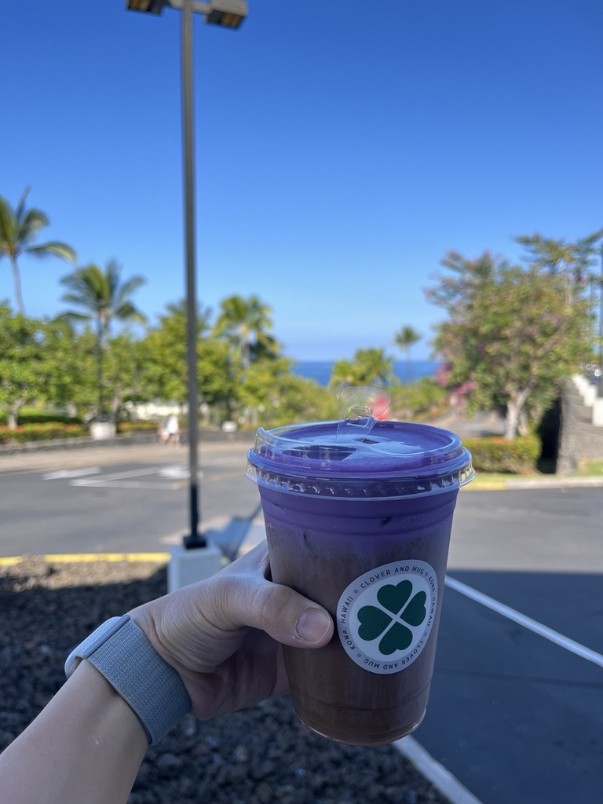

We took advantage of the Thanksgiving week to fly (slightly off‑peak) to Hawaiʻi and spent 8 delightful days across Oʻahu and the Island of Hawaiʻi (Big Island). Photos freeze moments; words help preserve texture, feelings, and the quiet details—so I wrote this travelogue.
Day 1 – Arrival in Honolulu
Up at 4 AM, rideshare to the airport, IND → Houston → Honolulu after ~8 hours in the air. We landed around 2 PM local time—sunny, warm, gentle trade wind.

Traffic was heavy driving toward Waikīkī. At first the neighborhoods were low, worn, almost sleepy. Closer to the coast, high‑rise hotels and shopping complexes emerged—conference centers, resort towers, glinting glass. We stayed at a Holiday Inn (IHG free night certificates); the room was tiny—just enough space to open a suitcase—reminiscent of compact Japanese business hotels. Hawaiʻi’s deep ties to Japanese tourism show even in hotel ergonomics.
Ala Moana Shopping Center was our first stop—the islands’ flagship mall with luxury brands. Hawaiʻi is not only a vacation paradise; its overall effective tax burden on purchases is lower than most US states, making shopping attractive. We found a birthday gift for Liuliu and caught a brief Polynesian‑style stage performance—dancers with characteristic sun‑kissed Pacific Islander features, warm music, a festive welcome.
Hawaiʻi does not levy a conventional retail “sales tax.” Instead it charges a General Excise Tax (GET) on almost all business activity (goods, services, rentals). Base rate: 4%. Honolulu (Oʻahu) adds a 0.5% county surcharge → 4.5% effective. This is well below the ~7.5%–7.7% average combined sales tax in many US locales.
Dinner (as proud Sichuan/Chongqing people) had to be at a Sichuan restaurant: Chengdu Taste. The famous cold skewers dish looked great but tasted average—similar to a DIY seasoning packet. Surprisingly, a simple stir‑fried cabbage was the highlight—clean, crunchy, addictive.

Day 2 – Diamond Head & North Shore
Jet lag woke us at 3 AM; by 5 AM, still dark, we walked to Waikīkī Beach. A few tents with sleeping unhoused residents, black horizon, rhythmic surf, and clean salty air—not the typical urban smell. We spotted a sleeping seal, perfectly relaxed—no jet lag envy.
After hotel breakfast we hiked Diamond Head. From the summit: the layered Waikīkī skyline in the foreground, an infinite cobalt seam where ocean meets sky in the distance—a unique Honolulu juxtaposition.

We drove to the North Shore for the “famous” shrimp plates—overrated: mushy rice, oily sauce, lackluster setting. Afternoon surf was rough under gray skies; powerful break reminding us of ocean force. Birthday omakase dinner: 15 courses, stellar uni and caviar. Another guest also had a birthday—candlelit sushi roll and a shared song closed the evening.


Day 3 – Koko Crater & Kualoa Ranch
Morning: Koko Crater Railway Trail—1174 old military railroad tie steps, steep and relentless. Families with infants, determined elders, and ultra‑fit repeat climbers all shared the slope. At the top: Hanauma Bay’s curved “dinosaur” silhouette.


Hana = bay / entrance; Uma = nose ridge / curved shape.
Afternoon: Kualoa Ranch ziplining (last visit I did ATV). Seven lines across dramatic, film‑famous valleys (Jurassic World among them). Longest line: lighter riders must tuck knees to reduce drag; staff “launch” you energetically—nicknamed a “tumble coconut.” Exhilarating swings, echoing shouts; freedom distilled.


Day 4 – Hanauma Bay Snorkeling & Flight to Big Island
Final Oʻahu morning brought clear skies. Under sun the ocean shifts from brooding muscle to jeweled serenity—brilliant sapphire base color. We snorkeled Hanauma Bay: beginner heaven—varied fish and coral; floating yields a feeling of safety inside its protective arc.

Evening flight to the Island of Hawaiʻi—new phase begins.
Day 5 – Snorkel & Marine Life
Another snorkeling day—this time by boat to two quieter bays. Within minutes: a pod of dolphins pacing our boat, sleek bodies visible below, occasional joyful leaps.
In deeper water we mustn’t stand—crew emphasized safety. Clearer water, more diverse fish, black spined urchins nestled among coral recesses. On the return we saw flying fish, a manta nearer the boat, volcanic sea caves along the coast. Only 9 people onboard—constant delighted shouts and laughter.
Afternoon beach walks; lazily sunning sea turtles completed the day—marine life bounty.


Day 6 – Volcanoes National Park
Two+ hour drive with anticipation—USGS notes suggested an imminent (37th of the year) eruption window. We passed South Point (Ka Lae), the southernmost land in the United States.

Ka Lae marks the geographically southernmost point of US territory—windswept, rugged, historically significant for Polynesian arrival routes.
Crater rim hike: vast ash‑gray bowl, sterile, stripped, a freeze‑frame of past lava fury; a vent still exhaling white fume. A rain forest segment and a lava tube later—green abundance beside barren flows—ecological contrast sharpened. Down on the crater floor, seedlings push through cracks, foreshadowing future forest—or its next incineration. Cycles of destruction and renewal.


Cold evening at the overlook—no visible lava that night; we left slightly disappointed.
Day 7 – Coastline, Pololū Valley & Night Eruption
Recovery day: leisurely northward coastal drive from Kona, stopping at beaches and parks. Hawi town: salty poke (too salty), boutique stores with intricate, pricey crafts.

Pololū Valley hike: descent to a black sand beach; misty valley behind, layered seaside cliffs ahead; cattle grazing distantly like a pastoral painting.


At 4 PM we learned the volcano was erupting—abandoned sunset/observatory plan and sprinted back (one fuel stop). Red glow appeared before arrival—adrenaline spike. At the overlook: molten lava fountaining from yesterday’s steaming vent; main flow slowing, forming a golden ribbon with fiery vein patterns feeding branch fissures. Cracks glowed like a night aerial view of a lit city.


Heat pulses, sulfur scent, intermittent low rumbling—multisensory awe. The eruption lasted 9 hours; that night felt the island was illuminated, everything reverent before deep Earth energy.
Kīlauea is among the world’s most active volcanoes. Frequent effusive eruptions build new crust and reshape local ecosystems while offering an invaluable natural laboratory.
Day 8 – Departure
Last morning: Outrigger Resort activities included a farmer’s market—fresh produce and handmade crafts. Leisurely ocean‑side breakfast, then to KOA. Kona Airport is minimal—open‑air, breezy; among the lowest‑maintenance international airports you’ll see.


Eight days passed quickly: sun & sand relaxation vs hiking fatigue; eruption awe vs missed cloud‑sea sunsets; marine life joy vs underwhelming meals. Travel blends delight and imperfection into memory—we carry both, and the gaps make us look forward to the next journey.